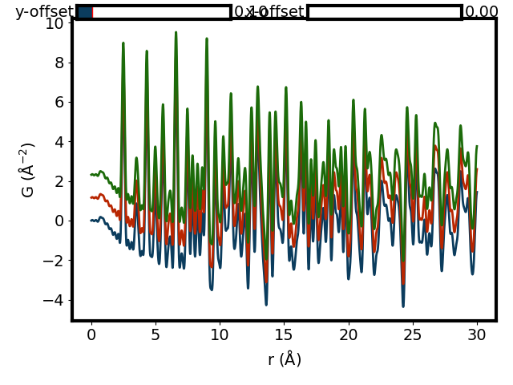

Data Serialization Server¶
The data serialization server receives the document from the proxy and serializes the raw data and the big image data. These data is relatively unimportant. These documents must starts with an prefix. This prefix is added by the data processing server.
The server only saves raw and big data. Important processed data like the calibration, XRD data, PDF data are saved by the data processing server at the same time of data processing. It is used to make sure these data will be saved without hindering the important jobs of data processing.
These saved data includes the dark subtracted images, the mask binary array, and all scalar raw data like temperature, time or positions.
Below is an example of the masked dark subtracted image from a standard nickel x-ray scattering. The other two dimensional data are visualized in the same way.

This is an example of the waterfall plot of G(r) data. The other one dimensional data are visualized in the same manner.
{kind=link}
Below shows an example of the QOI plotting of highest peak in the data. How it will be plotted is decided based on the scan type. It could be line plot or color mesh plot.